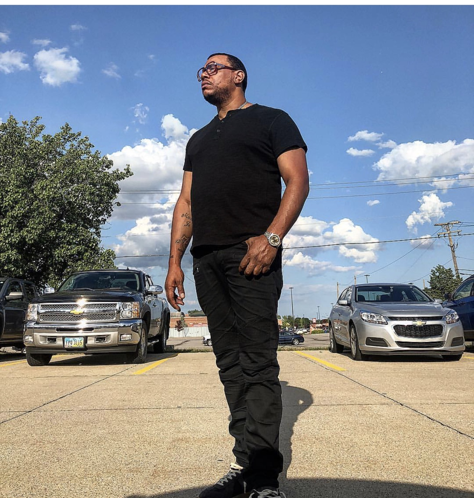

WELCOME TO CLT CULTURE 🌃
This page is for Charlotte, NC local musical artists, events and the best resturants in Charlotte
TOP CHEAP EATS IN CHARLOTTE
1. 7th Street Public Market
2. Price's Chicken Coop
3. Viva Chicken
4. Midnight Diner
5. Pinky's Westside Grill
6. RedEye Diner
7. The Roasting Company
8. JJ's Red Hots
9. Wing King Cafe
10. Johnny's Burritos
Here is a link for the best resturants in Charlotte:
TOP PLACES TO VISIT
1. South Park
2.Phillips Place
3. Shoppes At University Place
4.Charlotte Premium Outlets
5. FROCK Shop
6. Ballantyne Village
THINGS TO DO IN CHARLOTTE
1. ImaginOn: The Joe & Joan Martin Center
2.Wells Fargo History Museum
3.Discovery Place Science
4.Romare Bearden Park
5.NASCAR Hall of Fame
6.Blumenthal Performing Arts
Here is a website to know updated events in Charlotte:

Musical Artists
Mr. 704
We interviewed Mr. 704, the Charlotte rapper and ask him a series of questions. One of the question was how did he get started. His answer was he always took an interest in music and felt that he had a story to tell. Music influence his everyday life by, everything he speaks on, he experiences it. The meaning of his lyrics, is his story...his life. His greatest failure is not knowing how people will perceive his music and how he overcame it by being open-minded to what people have to say. If he had the chance to collaborate with anyone he said it will be, “Tupac.” His dream venue to perform at was a couple, "The Staple Center and Madison Square Garden." There was a lot of artists and songs that inspire him to go into music. If he could have been anything he would be, “What I am, a proud father.” The reason why he came up with his rap name, “Mr. 704,” was that it represents the city where he was from, Charlotte. A superhero he could be, he would be Superman because, "[Superman], was always there at the right time."

Timo Cashman
We interviewed a percussionist leader in the South Meck Marching Band. He started band because he had a cousin that did band and he knew he always wanted to do band, but wasn’t sure what instrument he wanted to play. But, he knew for sure he did not want to do orchestra. Music influence his life by as he quote, “I am who I am because of band. Social life is band.” His biggest influences are Zach Hudson, "he really was a big influence." He had made it into the big league and that’s what he wants to do. Musical wise he likes Rex Orange County and more. He was inspired by Justin Gyles when he was playing the marimba and he thought, “Wow that’s cool, I want to do that.” If he could be anything else other than be a band person he would be linguist. If he could be a superhero or a villain be would be Thor, because that’s his favorite avenger and superhero of all time.
Ian Bullock
We interviewed a drum major in the South Meck Marching Band. He started in band in elementary school when he was choosing his classes and there was a jazz band, “I thought wow I want to do that.” Him and his friend Rob when into band together and, “It has been history ever since,” he says. Music influence his everyday life because it has always been a major impact of his life. The past few years he discover a lot about music and how to conduct it. He got into band mainly to play for others. His biggest influences are Bill Evans and The Good Guys. His favorite musician is Bill Evans. There’s not a song in particular that made him get into band. If he wasn’t in band he said he, “[I] will learn a sport I wouldn’t enjoy.” If he could be a superhero he would be Batman.